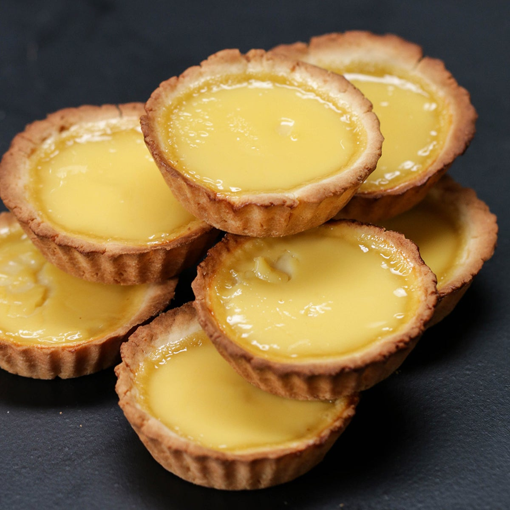

Hong Kong style egg tart

Description
Hong Kong egg tarts are found commonly served at Chinese dim sum restaurants on small plates in twos or threes. They are derived from the English-style custard tart and the Portuguese-style pastel de nata.
Hong Kong egg tarts are small, circular tarts of flaky pastry filled with lightly sweetened egg custard.
Ingredients
- 1 cup (125 grams) confectioners' sugar
- 3 cups (360 grams) all-purpose flour
- 1 cup (227 grams) unsalted butter
- 1 egg, beaten
- 1 dash vanilla extract
- 2/3 cup (134 grams) white sugar
- 1 1/2 cups (1/3 liter) water
- 9 eggs, beaten
- 1 dash vanilla extract
- 1 cup (252 grams) evaporated milk
Steps
- In a medium bowl, mix together the confectioners' sugar and flour. Mix in butter with a fork until it is in small crumbs. Stir in the egg and vanilla until the mixture forms a dough. The texture should be slightly moist. Add more butter if it is too dry, or more flour, if the dough seems greasy. Shape dough into 1 1/2 inch balls, and press the balls into tart molds so that it covers the bottom, and goes up higher than the sides. Use 2 fingers to shape the edge into an A shape.
- Preheat the oven to 450 degrees F (230 degrees C). Combine the white sugar and water in a medium saucepan, and bring to a boil. Cook until the sugar is dissolved, remove from heat and cool to room temperature. Strain the eggs through a sieve, and whisk into the sugar mixture. Stir in the evaporated milk and vanilla. Strain the filling through a sieve, and fill the tart shells.
- Bake for 15 to 20 minutes in the preheated oven, until golden brown, and the filling is puffed up a little bit.